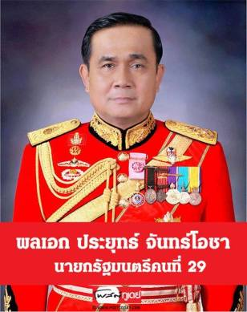
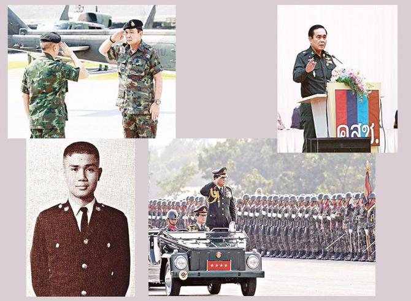
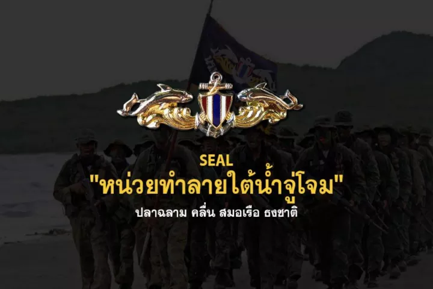
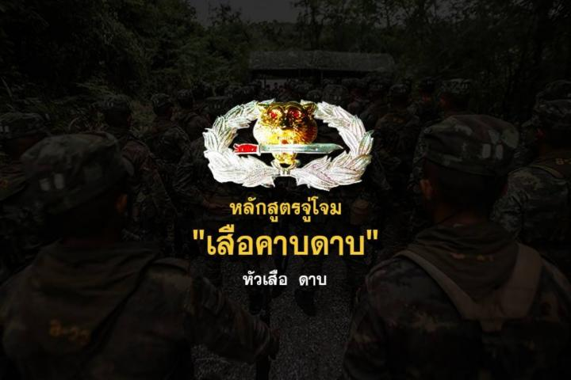
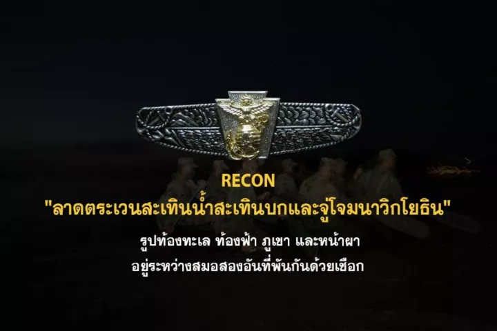
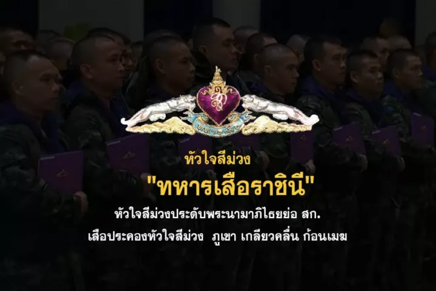
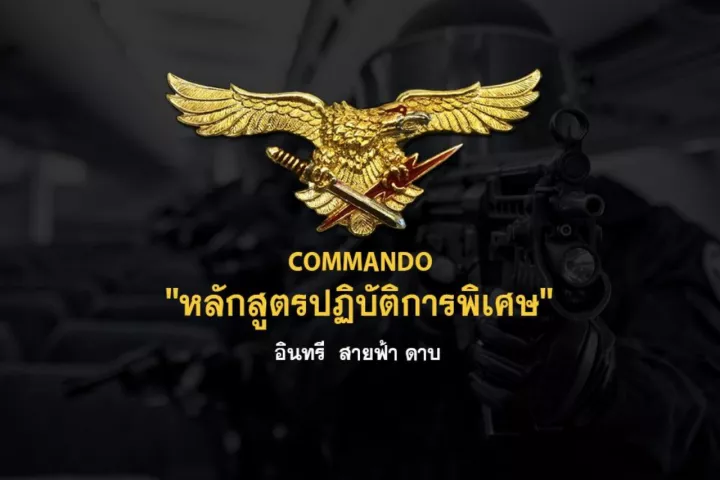

ประวัติ พลเอก ประยุทธ์ จันทร์โอชา
พลเอก ประยุทธ์ จันทร์โอชา เกิดเมื่อวันที่ 21 มีนาคม 2497 ที่จังหวัดนครราชสีมา
เป็นบุตรชายของพันเอก(พิเศษ) ประพัฒน์ จันทร์โอชา และเข็มเพชร จันทร์โอชา มารดาซึ่งรับราชการครู
พลเอก ประยุทธ์มีชื่อเล่นว่า "ตู่" หรือที่สื่อมวลชนนิยมเรียกว่า "บิ๊กตู่" เป็นบุตรชายคนโตจากพี่น้องทั้งหมดสี่คน ได้แก่
พลเอก ปรีชา จันทร์โอชา อดีตปลัดกระทรวงกลาโหมและอดีตผู้ช่วยผู้บัญชาการทหารบก สมรสกับ
นาง ผ่องพรรณ จันทร์โอชา ,ประคัลภ์ จันทร์โอชา สมรสกับ นางสาว เกสร จักสุจันทร์ และ พลอากาศโทหญิง ประกายเพชร จันทร์โอชา ผู้ทรงคุณวุฒิกองทัพอากาศ
พลเอก ประยุทธ์ จันทร์โอชา สำเร็จการศึกษาชั้นประถมศึกษาปีที่ 7 จากโรงเรียนสหะกิจวิทยา
จังหวัดลพบุรี ซึ่งเข็มเพชร มารดาเป็นครูสอนอยู่ ปัจจุบันโรงเรียนแห่งนี้ได้ยุบไปแล้ว ต่อมาได้เข้าศึกษาต่อชั้นมัธยมศึกษาปีที่ 1 ที่โรงเรียนพิบูลวิทยาลัย
จังหวัดลพบุรี แต่เรียนได้เพียงปีเดียวก็ลาออกเนื่องด้วยบิดาเป็นนายทหารจำต้องโยกย้ายไปในหลายจังหวัด และได้เข้าศึกษาต่อที่โรงเรียนวัดนวลนรดิศ
กรุงเทพมหานคร จนจบชั้นมัธยมศึกษาปีที่ 3 และได้เข้าศึกษาต่อที่โรงเรียนเตรียมทหาร จนสำเร็จเป็นนักเรียนเตรียมทหารรุ่นที่ 12 และเป็นนักเรียนนายร้อยพระจุลจอมเกล้า รุ่นที่ 23
และเป็นศิษย์เก่าวิทยาลัยป้องกันราชอาณาจักร
พลเอก ประยุทธ์รับราชการทหารอยู่ที่กรมทหารราบที่ 21 รักษาพระองค์ หรือ "ทหารเสือราชีนี" มาโดยตลอด
โดยเริ่มมาจากตำแหน่งผู้บังคับการกองพัน จนถึงผู้บังคับการกรม จากนั้นจึงย้ายไปอยู่ที่กองพลทหารราบที่ 2 รักษาพระองค์
และรับตำแหน่งรองแม่ทัพภาคที่ 1 เขาเป็นสมาชิก "บูรพาพยัคฆ์" ในกองทัพ เช่นเดียวกับพลเอก อนุพงษ์ เผ่าจินดา
รัฐมนตรีว่าการกระทรวงมหาดไทยและสมาชิกคณะรักษาความสงบแห่งชาติ และพลเอก ประวิตร วงษ์สุวรรณ รองนายกรัฐมนตรี
รัฐมนตรีว่าการกระทรวงกลาโหมและรองหัวหน้าคณะรักษาความสงบแห่งชาติ ซึ่งทั้งสองยังเคยดำรงตำแหน่งผู้บัญชาการทหารบก
พ.ศ. 2514 – โรงเรียนเตรียมทหาร รุ่นที่ 12
พ.ศ. 2519 – โรงเรียนนายร้อยพระจุลจอมเกล้า รุ่นที่ 23
พ.ศ. 2519 - หลักสูตรชั้นนายร้อย รุ่นที่ 51
พ.ศ. 2524 – หลักสูตรชั้นนายพัน รุ่นที่ 34
พ.ศ. 2528 – หลักสูตรหลักประจำโรงเรียนเสนาธิการทหารบก ชุดที่ 63
พ.ศ. 2550 – หลักสูตรวิทยาลัยป้องกันราชอาณาจักรภาครัฐร่วมเอกชน รุ่นที่ 20

วันที่ 19 กันยายน 2549 เมื่อเกิดรัฐประหารโดยคณะปฏิรูปการปกครองในระบอบประชาธิปไตยอันมีพระมหากษัตริย์ทรงเป็นประมุข
พลตรีประยุทธ์เป็นผู้รับคำสั่งตรงจากพลโท อนุพงษ์ เผ่าจินดา แม่ทัพภาคที่ 1 พลตรีประยุทธ์ได้เลื่อนชั้นยศเป็น "พลโท" และรับตำแหน่งแม่ทัพภาคที่ 1
และได้รับแต่งตั้งให้เป็นสมาชิกสภานิติบัญญัติแห่งชาติ ระหว่างวันที่ 4 กันยายน 2551 ถึง 14 กันยายน 2551 พลเอกประยุทธ์ดำรงตำแหน่งรองหัวหน้า
ผู้รับผิดชอบในการแก้ไขสถานการณ์ฉุกเฉินและรองผู้อำนวยการกองอำนวยการแก้ไขสถานการณ์ฉุกเฉินในเหตุการณ์ นปช. ปะทะกับกลุ่มพันธมิตรฯ 2 กันยายน พ.ศ. 2551
สมัยรัฐบาลสมัคร สุนทรเวช, วันที่ 1 ตุลาคม พ.ศ. 2551 ถึง 30 กันยายน พ.ศ. 2552 เขาได้รับการแต่งตั้งเป็นเสนาธิการทหารบก[16] และต่อมาเป็นรองผู้บัญชาการทหารบก
ตั้งแต่วันที่ 1 ตุลาคม พ.ศ. 2552 ถึง 30 กันยายน พ.ศ. 2553, วันที่ 13 เมษายน 2552 เขาได้รับแต่งตั้งเป็นผู้ปฏิบัติงานในกองอำนวยการแก้ไขสถานการณ์ฉุกเฉิน
ในเหตุการณ์ความไม่สงบทางการเมืองในประเทศไทย เมษายน พ.ศ. 2552 เนื่องจากดำรงตำแหน่งเป็นเสนาธิการทหารบกในขณะนั้นจนสิ้นสุดการประกาศสถานการณ์ในวันที่ 24 เมษายน 2552
ต่อมาเมื่อวันที่ 2 กันยายน 2553 พลเอก ประยุทธ์ จันทร์โอชา ได้รับแต่งตั้งให้เป็นผู้บัญชาการทหารบกต่อจาก พลเอก อนุพงษ์ เผ่าจินดา ที่เกษียณอายุราชการในเดือนตุลาคม 2553
อภิสิทธิ์ เวชชาชีวะลงนามแต่งตั้งให้เขาเป็นหัวหน้าผู้รับผิดชอบในการแก้ไขสถานการณ์ฉุกเฉินตั้งแต่วันที่ 5 ตุลาคม 2553 ถึง 22 ธันวาคม 2553
ทำหน้าที่เป็นหนึ่งในนายทหารที่ควบคุมการชุมนุมของแนวร่วมประชาธิปไตยต่อต้านเผด็จการแห่งชาติ พ.ศ. 2553
ในวันที่ 19 พฤศจิกายน พ.ศ. 2553 พลเอกประยุทธ์ ได้ออกคำสั่งศูนย์อำนวยการแก้ไขสถานการณ์ฉุกเฉิน ที่ 141/2553 เรื่อง ให้พนักงานเจ้าหน้าที่ที่มีอำนาจ
ออกคำสั่งยึด หรือ อายัด สินค้าหรือวัตถุอื่นใดที่ก่อให้เกิดความแตกแยก ผู้ใดฝ่าฝืนข้อห้ามคำสั่งนี้ ต้องระวางโทษจำคุกไม่เกิน 2 ปี หรือปรับไม่เกิน 40,000 บาท หรือทั้งจำทั้งปรับ
ทั้งนี้ตามที่บัญญัติไว้ในมาตรา 18 แห่งพระราชกำหนดการบริหารราชการในสถานการณ์ฉุกเฉิน พ.ศ. 2548[19]คำสั่งดังกล่าวถูกวิพากษ์วิจารณ์อย่างมากจนต้องยกเลิกในที่สุด
เขายังเป็นหนึ่งในคณะดำเนินคดีระหว่างประเทศไทยและกัมพูชาในศาลยุติธรรมระหว่างประเทศเมื่อปี 2554[20]และในวันที่ 28 มีนาคม พ.ศ. 2554
เขาได้รับแต่งตั้งเป็นกรรมการผู้ทรงคุณวุฒิในคณะกรรมการป้องกันและปราบปรามยาเสพติดภายหลัง ยิ่งลักษณ์ ชินวัตร เป็นนายกรัฐมนตรี
เขาเป็นบุคคลที่หลายฝ่ายคาดว่าจะพ้นจากตำแหน่ง[22]ผู้บัญชาการทหารบกโดยอาจเปลี่ยนโยกย้าย เป็นผู้บัญชาการทหารสูงสุดแทนเนื่องจากเป็นผู้อยู่ตรงข้ามฝ่ายสนับสนุนรัฐบาลในขณะนั้น
แต่ก็ไม่ได้มีการปรับย้ายตามที่ถูกคาดการณ์ นับได้ว่าพลเอก ประยุทธ์ จันทร์โอชาเป็นผู้บัญชาการทหารบกภายใต้การบังคับบัญชาของนายกรัฐมนตรีถึง 3 ราย ได้แก่อภิสิทธิ์ เวชชาชีวะ, ยิ่งลักษณ์ ชินวัตร และตัวพลเอก ประยุทธ์เองตามลำดับ
.png)
พรรคพลังประชารัฐ
เครื่องหมาย

ปลาฉลาม สีขาวหรือสีน้ำเงิน หมายถึงจ้าวแห่งท้องทะเล ดุร้าย น่าเกรงขาม สง่างาม และแข็งแกร่ง
คลื่น หมายถึง ความน่าหวั่นกลัวของทะเลที่มีเกลียวคลื่นอยู่ตลอดเวลา หรืออุปสรรคจากคลื่นหัวแตก แต่ก็ไม่ได้ทำให้ฉลามเกรงกลัวแต่อย่างไร
สมอเรือ หมายถึง ทหารเรือ ในอดีตจะรับเฉพาะทหารเรือเท่านั้น แต่ปัจจุบันทางหน่วยได้รับทหารบก ทหารอากาศ และตำรวจเพิ่มเข้ามาด้วย
ธงชาติ หมายถึง การที่ยอมพลีชีพเพื่อปกป้อง ชาติ ศาสนา พระมหากษัตริย์

หัวเสือ สัญลักษณ์ของอำนาจ ความเป็นเจ้าป่า และความโหดต่อศัตรูของมัน
ดาบ สัญลักษณ์การต่อสู้ ความแหลมคมของดาบ หมายถึงสติปัญญาอันเฉียบแหลมของทหารจู่โจม สังหารข้าศึกได้อย่างเงียบกริบ รวดเร็ว
ช่อชัยพฤกษ์ สัญลักษณ์ความเจริญรุ่งเรืองก้าวหน้า อีกทั้งเป็นตัวอย่างและผู้นำที่ดี

รูปท้องทะเล ท้องฟ้า ภูเขา และหน้าผา อยู่ระหว่างสมอสองอันที่พันกันด้วยเชือก หมายถึง ภายใต้ความสามัคคีกลมกลืนของกองทัพเรือนั้น จะเป็นรั้วที่เข้มแข็งเพื่อคุ้มครองป้องกันภัย ที่จะมาคุกคามต่อน่านน้ำ น่านฟ้า และชายฝั่งทะเลของไทยที่จะมาคุกคามต่อน่านน้ำ น่านฟ้า และชายฝั่งทะเลของไทย
ครุฑเหยียบโลกที่ปรากฏอยู่บนแผนที่ประเทศไทย มีสมอปักอยู่ หมายถึง เครื่องหมายกรมนาวิกโยธินที่ขึ้นตรงต่อกองทัพเรือ และปฏิบัติหน้าที่ภายใต้การควบคุม และการสนับสนุนจากกองทัพเรือ

หัวใจสีม่วงประดับพระนามาภิไธยย่อ สก. หมายถึง ผู้บริสุทธิ์ ซื่อสัตย์สุจริต และจริงใจ ทั้งนี้เพราะผู้ที่ใกล้ตาย หัวใจจะกลายจากสีแดงเป็นสีม่วง ในห้วงเวลานั้น บุคคลผู้นั้นจะไม่พูดปดหรือปิดบังสิ่งใด ๆ
เสือประคองหัวใจสีม่วง หมายถึง กำลังพลทหารเสือทุกนายเทิดทูนความซื่อสัตย์ สุจริต และจงรักภักดีแทบเบื้องพระยุคลบาทภูเขา เกลียวคลื่น ก้อนเมฆ หมายถึง ทหารเสือทุกนายพร้อมจะดั้นด้นไปทุกหนแห่ง ไม่ว่าจะเป็นบนฟ้า พื้นดิน ภูเขา หรือในทะเล เพื่อรักษาไว้ซึ่งความปลอดภัยของชาติ และองค์พระมหากษัตริย์

อินทรี หมายถึง สัญลักษณ์ของความรวดเร็ว สามารถไปได้ทุกแห่งหน และมีสายตาอันคมกล้ามองเห็นได้ไกล
สายฟ้า หมายถึง การปฏิบัติงานที่รวดเร็วรุนแรงและเด็ดขาด
ดาบ หมายถึง ความกล้าหาญและความเฉียบขาดในการปฏิบัติภารกิจ